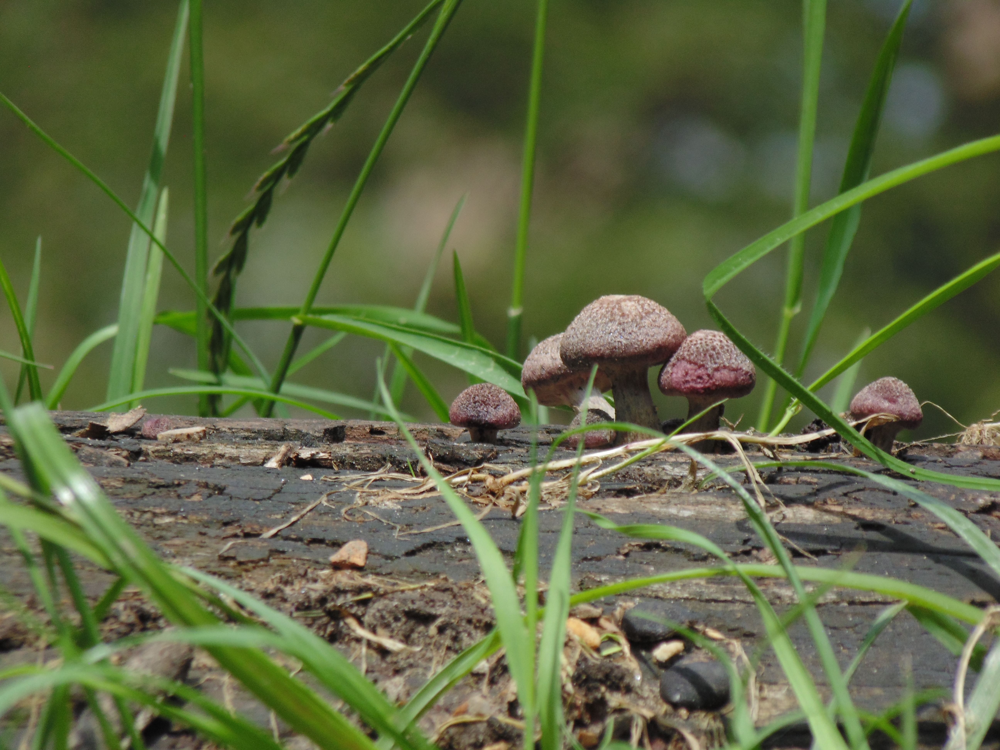

Agaricaceae
La familia Agaricaceae incluye hongos de sombrero y pie con láminas libres, esporas marrones y anillo en el pie. Comprende géneros como Agaricus, Lepiota, Macrolepiota y Chlorophyllum. En la zona se encuentran especies saprófitas en suelos ricos en materia orgánica.

fotografía tomada por Estiben Pinzón

fotografía tomada por Estiben Pinzón

fotografía tomada por Estiben Pinzón

fotografía tomada por Estiben Pinzón
Especies registradas en la zona
- Agaricus campestris — Champiñón silvestre, comestible, en praderas
- Lepiota procera — Parasol, sombrero escamoso, anillo móvil
- Chlorophyllum molybdites — Láminas verdosas, tóxico, en césped